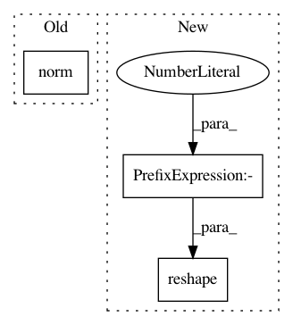

46cb0b5b2cf2d836a2cf96be95d4e25a4004675e,tslearn/clustering.py,KShape,_fit_one_init,#KShape#Any#Any#Any#,729
Before Change
self.cluster_centers_ = initial_centroids.copy()
else:
self.cluster_centers_ = rs.randn(self.n_clusters, sz, d)
self._norms_centroids = numpy.linalg.norm(self.cluster_centers_, axis=(1, 2))
old_inertia = numpy.inf
for it in range(self.max_iter):
old_cluster_centers = self.cluster_centers_.copy()
After Change
if hasattr(self.init, "__array__"):
self.cluster_centers_ = self.init.copy()
else:
self.cluster_centers_ = _k_init(X[:, :sz, :].reshape((n_ts, -1)),
self.n_clusters, x_squared_norms, rs).reshape((-1, sz, d))
old_inertia = numpy.inf
for it in range(self.max_iter):
self._assign(X)
In pattern: SUPERPATTERN
Frequency: 3
Non-data size: 3
Instances
Project Name: rtavenar/tslearn
Commit Name: 46cb0b5b2cf2d836a2cf96be95d4e25a4004675e
Time: 2018-10-22
Author: guillaume.androz@gmail.com
File Name: tslearn/clustering.py
Class Name: KShape
Method Name: _fit_one_init
Project Name: IBM/adversarial-robustness-toolbox
Commit Name: 5a8d8e4c155de0b27d3e30bb165f7f375209ecf9
Time: 2017-07-26
Author: valentina.zantedeschi@ibm.com
File Name: src/metrics.py
Class Name:
Method Name: empirical_robustness
Project Name: IBM/adversarial-robustness-toolbox
Commit Name: 95e4abcf0f23d2be3b73c1db326b3cb9dc75dc9e
Time: 2017-07-14
Author: valentina.zantedeschi@ibm.com
File Name: src/metrics.py
Class Name:
Method Name: empirical_robustness